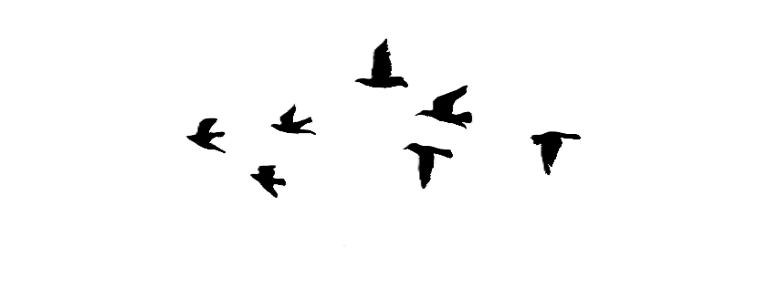

A data-driven journey through the seasonal rhythms, population patterns,
and geographic journeys of Australia's migratory shorebirds.
Australia supports extraordinary bird diversity over 900 species, roughly 45% of which are found nowhere else on Earth. The charts below highlight which species birdwatchers encounter most often and which are reported most consistently across survey sites. High sighting frequency does not always mean high conservation value; some common urban species dominate the count while rarer shorebirds appear more selectively at specialised coastal habitats.
Every year, millions of shorebirds undertake one of nature's most extraordinary journeys, flying up to 10,000 km non-stop from breeding grounds in Siberia, Alaska, and China to reach the warm mudflats and estuaries of Australia. They arrive in the austral spring (October–November), fatten on invertebrates throughout summer, then depart in March–April. Use the brush selector beneath the peak-count chart to zoom into specific years, and click the legend to isolate individual species.
Shorebird abundance across Australia is strikingly uneven. Western Australia alone accounts for over 2.18 million peak bird counts more than three times the combined total of all other states. This dominance is driven by globally significant sites like Eighty Mile Beach and Roebuck Bay, which provide vast, undisturbed intertidal mudflats. The choropleth map, scatter plot, and bubble chart below expose the full spatial picture, from continental scale down to individual sites.
Zooming into Greater Geelong brings the national story into sharp local focus. With over 65,000 sighting records spanning 8 common species, Geelong's parks, coastline, and suburban green spaces support a surprisingly rich avian community. The Australian Magpie leads local counts (1,907 records), followed closely by the Red Wattlebird and Welcome Swallow. Use the species dropdown on the map to explore habitat preferences, and the brush on the area chart to examine year-by-year sighting trends.